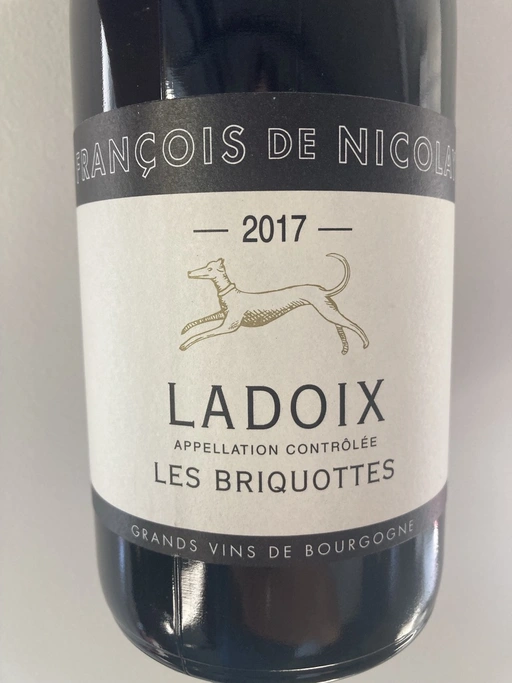

- Type
- Red Still, Dry
- Producer
- François de Nicolay
- Vintage
- 2017
- Location
- France, Ladoix AOC
- Grapes
- Pinot Noir, Pinot Noir
- Alcohol
- 12.5
- Sugar
- 1
- Price
- 917 UAH
- Cellar
- N/A
Producer
François is one of the owners of Chandon de Briailles. In 20?? he started his own négoce project, which sources organic and biodynamic fruit from trusted and reputable growers who are either certified biodynamic or are in the process. François is known for his selective approach when purchasing grapes. Clusters are carefully inspected during veraison and harvest to ensure that they are healthy enough to produce wine without the use of additives.
Vinification and élevage take place in his ancient cellar-cave in Savigny-lès-Beaune and is non-interventionist in every aspect - no pumpovers, no filtration, and no sulfur additions.
Ratings
2021-09-14 - 8.25
Sophisticated and elegant bouquet of strawberry, vanilla, flowers, forest floor and dried figs. Juicy, delicious and easy going négoce Pinot Noir by one of the owners of Chandon de Briailles. Still has potential but already quaffable.
Tasted as part of Na Uzbičči event.